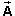

Question. How are the vector components of a vector related to the scalar components of the same vector?
Answer. The vector components x and y of
x = (-2, 0)
y = (0, 5).
The scalar components of are the numbers
Ax = -2  and
and  Ay = 5.
Ay = 5.
x is related to Ax and y is related to Ay by
x = (Ax,0)
y = (0,Ay).
Thus,
x + y = (Ax,0) + (0,Ay)
 = (Ax,Ay) = .
= (Ax,Ay) = .